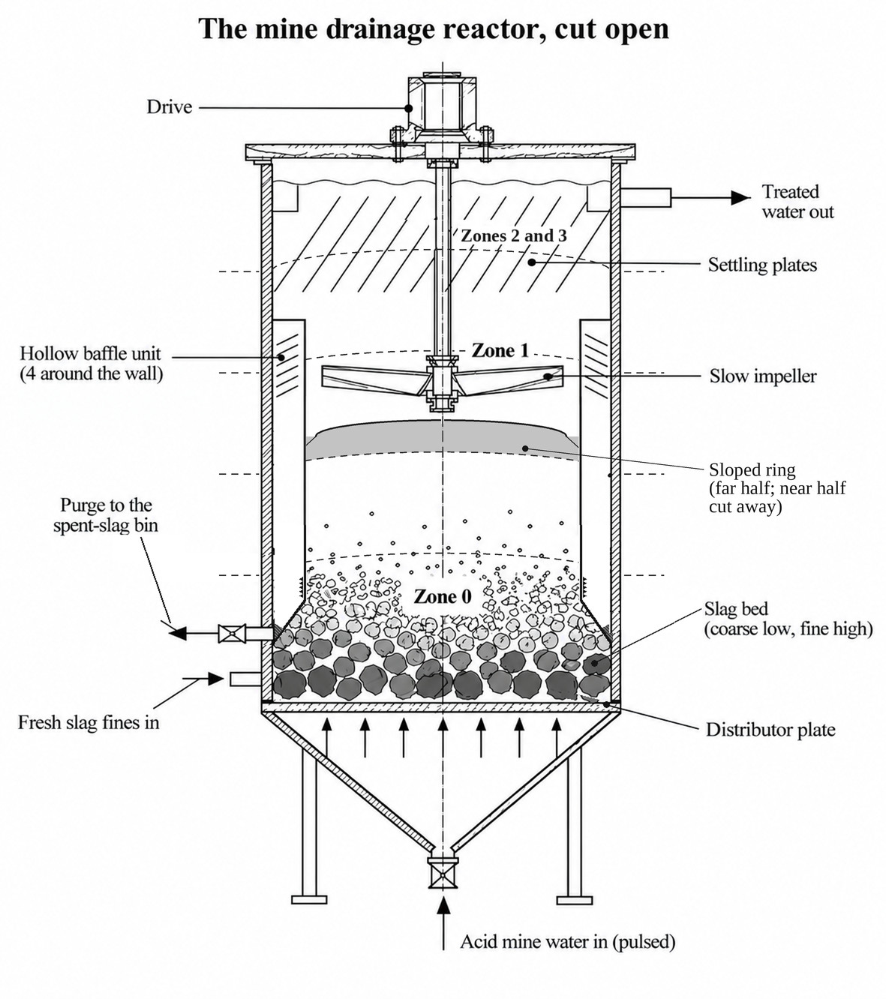

The mine drainage reactor
Six drawings of the reactor that uses steel-slag fines in place of quicklime to neutralize acid mine water, from the whole vessel down to one baffle unit. They show only the parts particular to this design. Modeled on paper: nothing is built and nothing is measured.
Fine steel slag neutralizes acid mine water in place of quicklime. The hard part is keeping the grains clean and getting the spent ones out.
Slag grains dissolve as they work, so the bed is a moving mix of fresh grains, shrinking grains and iron oxide that does not react at all. The reactor sorts them with the water itself: slow upflow and short pulses in the bed, a ring and slow impeller above it, and hollow baffle units that catch the heavy inert grains for purging. Settling plates stop the rest from leaving with the treated water. Aeration and the clarifier are ordinary equipment and are not drawn here.
Click any drawing to enlarge it. They are sketches to explain the idea, not engineering drawings; the sizes and speeds are design values from my model.



See it in 3D.
The 3D models show the same parts as solid drawings you can rotate, along with the fines lung. They sit behind a password that I give to people I am talking to.
Modeled at TRL 2. The first bench tests come after the work Dr. McCormick sets. See how the design is checked.
Let's talk.
I'm always glad to talk chemistry, slag, mine water, or anything OlivAir related.